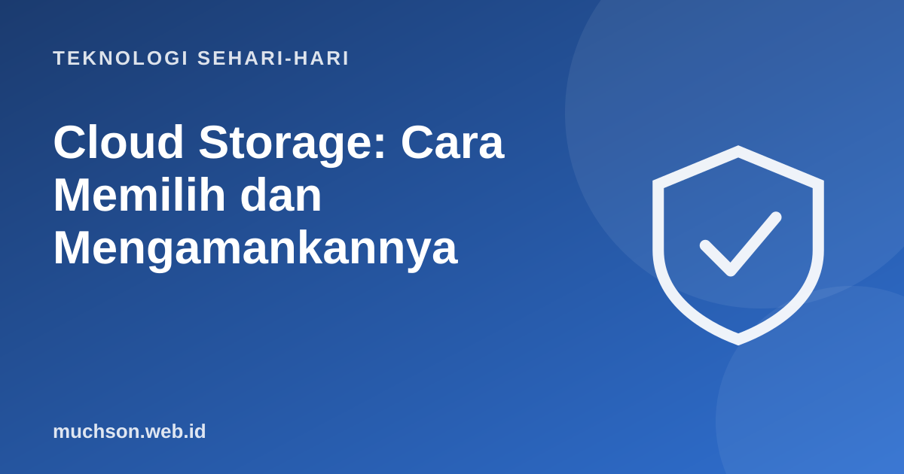

Beranda › Artikel › Teknologi Sehari-hari
Teknologi Sehari-hariCloud Storage: Cara Memilih dan Mengamankannya
Menyimpan file di awan berarti menyimpannya di server milik penyedia layanan, bukan di perangkat Anda. Praktis untuk akses dari mana saja dan sebagai cadangan, tetapi ada hal yang perlu Anda atur agar tetap aman.

Cara kerja singkat
Pertimbangan memilih
| Pertimbangan | Yang perlu ditanyakan |
|---|---|
| Kapasitas gratis dan harga | Berapa gratisnya, berapa paket berbayarnya? |
| Ekosistem | Cocok dengan perangkat dan aplikasi yang Anda pakai (Android, iPhone, Windows)? |
| Kolaborasi | Bisa berbagi dan mengedit bersama? |
| Keamanan | Verifikasi dua langkah, riwayat versi, enkripsi? |
| Privasi | Bagaimana kebijakan penyimpanan dan penggunaan data Anda? |
| Kemudahan keluar | Apakah mudah mengunduh semua data bila pindah layanan? |
Pengaturan keamanan
Ingat
Sinkronisasi bukan cadangan penuh. Bila file terhapus di satu perangkat, ia bisa ikut terhapus di semua perangkat. Gunakan riwayat versi dan simpan satu salinan di tempat lain untuk data penting.
Tanya jawab
Apakah file di awan dienkripsi?
Umumnya terenkripsi saat dikirim dan disimpan, tetapi penyedia biasanya memegang kunci. Untuk data sangat sensitif, enkripsi sendiri sebelum mengunggah.
Apa yang terjadi bila akun saya ditutup?
Anda bisa kehilangan akses ke file. Itu alasan menyimpan salinan di tempat lain dan menjaga akun.
Perlukah membayar langganan?
Bila kapasitas gratis tidak cukup dan Anda memakainya rutin sebagai cadangan, paket berbayar masuk akal.